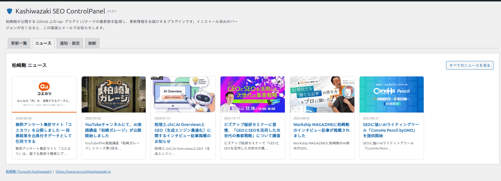

作者ニュース
「ニュース」タブには、作者サイト（www.tsuyoshikashiwazaki.jp）の最新ニュースが 6 件表示されます。プラグインのリリース情報やセミナー・メディア掲載などを管理画面から確認できます。
画面の見方

- 各カードにはサムネイル画像・公開日・タイトル・抜粋が表示されます
- タイトルをクリックすると作者サイトの該当記事が新しいタブで開きます
- 右上の「すべてのニュースを見る」から作者サイトのニュース一覧へ移動できます
取得の仕組み
- 作者サイトの REST API からニュースを取得し、取得できない場合は RSS フィードへ自動的にフォールバックします
- 取得結果は 6 時間キャッシュされます。「更新一覧」タブの「今すぐチェック」を押すとニュースも再取得されます
- 送信するのは取得リクエストのみで、サイトの個人情報やアクセストークンは送信されません
ニュース取得を無効にする
「通知・設定」タブの「作者ニュース取得」のチェックを外して保存すると、ニュースの取得と表示を停止できます。
ニュース取得を無効にしても、更新監視・通知などプラグインの他の機能には影響しません。